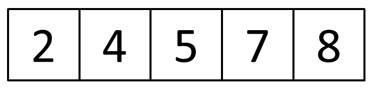

Insertion Sort
Content
Method
Ascending Order:
- Prepare a list of unsorted elements A[0...n-1], while n is the number of elements
- Start from A[1], let x = A[1] and compare x to A[i-1, i-2,...,0]
- Repeat the comparison until x is larger than the comparing element y
- Move the element A[y+1...i-1] to A[y+2...i]
- Replace A[y+1] by x
- Repeat step 2-5 and start from A[2...n-1]
Descending Order:
- Prepare a list of unsorted elements A[0...n-1], while n is the number of elements
- Start from A[1], let x = A[1] and compare x to A[i-1, i-2,...,0]
- Repeat the comparison until x is smaller than the comparing element y
- Move the element A[y+1...i-1] to A[y+2...i]
- Replace A[y+1] by x
- Repeat step 2-5 and start from A[2...n-1]
Algorithm
Ascending Order:
for (int i = 1; i < arr.length; i++) {
store = arr[i];
int count = i;
for (int j = i - 1; j >= 0; j--) {
if (store <= arr[j]) {
arr[j + 1] = arr[j];
count = j;
} else {
break;
}
}
arr[count] = store;
}
Descending Order:
for (int i = 1; i < arr.length; i++) {
int store = arr[i];
int count = i;
for (int j = i - 1; j >= 0; j--) {
if (store >= arr[j]) {
arr[j + 1] = arr[j];
count = j;
} else {
break;
}
}
arr[count] = store;
}
Time complexity
| Best Case | Average Case | Worst Case |
| Ω(n) | Θ(n2) | Ο(n2) |
Example
For ascending order:
There are a list of unsorted elements A[0...4]
- Start from A[1], let x = A[1] and compare A[1] to A[0]
- Let x = A[2], compare A[2] to A[1] and A[0] In this time, A[2] is smaller than both A[1] and A[0]. So shift the position of A[0] to A[1] and the position of A[1] to A[2].
- Let x = A[3], compare A[3] to A[2], A[1] and A[0] A[3] is smaller than both A[2] and A[1], but it is larger than A[0]. So shift the position of A[1] to A[2] and the position of A[2] to A[3].
- Let x = A[4], compare A[4] to A[3], A[2], A[1] and A[0] A[4] is smaller than A[3] only. So shift the position of A[3] to A[4] and insert x to the position A[3].
- The list is sorted in ascending order 
 Because A[1] is larger than A[0], so we do nothing in this case.
Because A[1] is larger than A[0], so we do nothing in this case.
Also, insert x to the position A[0].
Also, insert x to the position A[1].
For descending order:
There are a list of unsorted elements A[0...4]
- Start from A[1], let x = A[1] and compare A[1] to A[0] Because A[1] is smaller than A[0], so we do nothing in this case.
- Let x = A[2], compare A[2] to A[1] and A[0] In this time, A[2] is larger than both A[1] and A[0]. So shift the position of A[0] to A[1] and the position of A[1] to A[2].
- Let x = A[3], compare A[3] to A[2], A[1] and A[0] A[3] is larger than A[2], but it is smaller than A[1] and A[0]. So shift the position of A[2] to A[3].
- Let x = A[4], compare A[4] to A[3], A[2], A[1] and A[0] A[4] is larger than A[3], A[2] and A[1]. So shift the position of A[3] to A[4], A[2] to A[3] and A[1] to A[2]. Insert x to the position A[1].
- The list is sorted in descending order
Also, insert x to the position A[0].
Also, insert x to the position A[2].